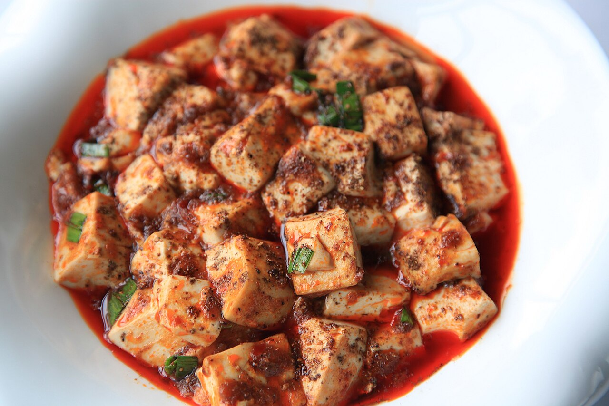
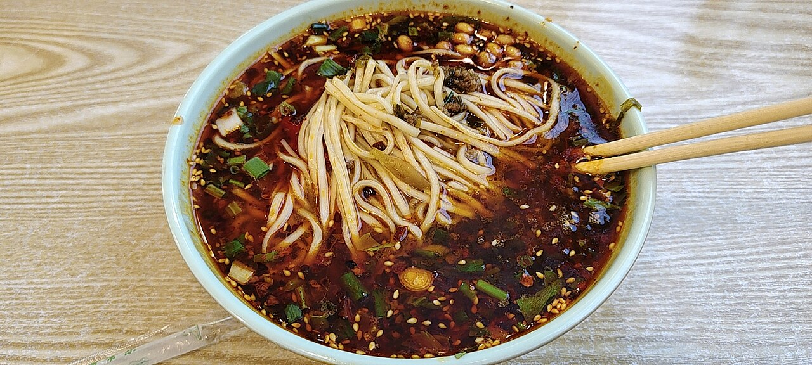
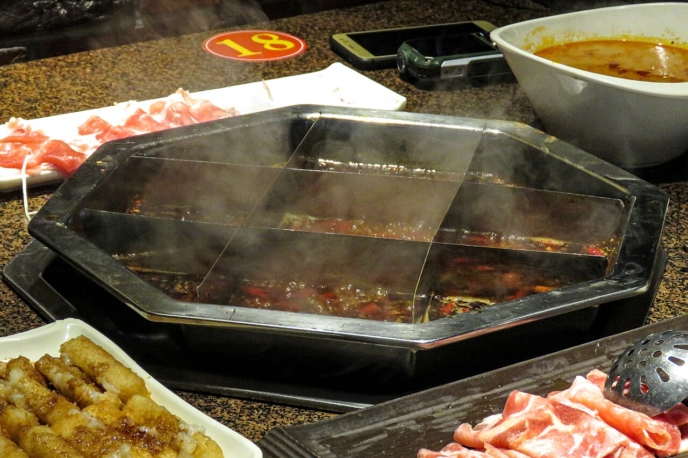

Most writing about Chengdu food is about heat. The useful question is money, because the price range inside one city is wider than most visitors expect: the same bowl of dan dan noodles is ¥10 at a snack shop and ¥28 in a hotel dining room, and the difference is rarely the food. I keep a running price table from my own eating in Chengdu, and this page is the 2026 version of it — 20 dishes, per person, in yuan, with the tier each price belongs to.
The long-form version, with the specific restaurants, the neighborhood logic and the ordering scripts, is in our Chengdu food guide. This page is the spreadsheet.
These are the ranges I work from for 2026, per person, ordinary tier — no hotel dining, no tourist-strip restaurants. Where a dish is sold by the stick or the piece, the price is per unit, because that is how you will be charged.
| Dish | Chinese | Price (2026) | Where it is sold |
|---|---|---|---|
| Mapo tofu | 麻婆豆腐 | ¥38–58 | Sichuan restaurants |
| Kung pao chicken | 宫保鸡丁 | ¥42–68 | Any 川菜馆 |
| Twice-cooked pork | 回锅肉 | ¥38–58 | Home-style restaurants |
| Boiled fish | 水煮鱼 | ¥58–88 | Sichuan restaurants |
| Fuqi feipian | 夫妻肺片 | ¥32–48 | Cold-dish counters |
| Saliva chicken | 口水鸡 | ¥28–45 | Cold-dish counters |
| Dan dan noodles | 担担面 | ¥10–16 | Noodle shops, all day |
| Sweet water noodles | 甜水面 | ¥8–14 | Snack shops |
| Zhong dumplings | 钟水饺 | ¥12–20 | Namesake shops |
| Long chao shou | 龙抄手 | ¥12–20 | Namesake shops |
| Lai tangyuan | 赖汤圆 | ¥10–18 | Snack shops |
| Mao cai | 冒菜 | ¥30–50 | Everywhere, lunch only |
| Hotpot | 火锅 | ¥90–150 /person | Yulin, Jianshe Road |
| Skewer hotpot | 串串香 | ¥0.6–1.2 /stick | Kuixinglou, Yulin |
| Bobo chicken | 钵钵鸡 | ¥1–3 /stick | Afternoon stalls |
| Rabbit head | 兔头 | ¥12–18 /each | Night stalls |
| Guokui | 锅盔 | ¥8–15 | Street carts, mornings |
| Dan hong gao | 蛋烘糕 | ¥5–10 | Street carts |
| Sweet oil fruit | 糖油果子 | ¥5–8 | Street carts |
| Bing fen | 冰粉 | ¥8–15 | Dessert stalls |
Read as a budget, that is a comfortable day at ¥110–160 per person: a ¥10 noodle breakfast, a ¥45 lunch of two shared dishes, ¥30–50 of skewers and snacks in the afternoon, and a ¥90–150 hotpot at night. The same day at hotel level is ¥500+ and, in my experience, not better.

Three variables move a Chengdu menu price, and only one of them is food cost.
1. The rent of the block. A dan dan noodle shop inside the Jinli or Kuanzhai Alley circuits charges ¥25–35 for a bowl that costs ¥10 four hundred meters away, and the recipe does not change. The pedestrian streets around Chunxi Road behave the same way. Walking two blocks off the main drag is the single highest-return five minutes in the city.
2. Whether there is a room. A 川菜馆 with tablecloths, air conditioning and a menu with photographs adds ¥15–25 per dish against a bare-bones 苍蝇馆子 (fly restaurant) with plastic stools. Both are legitimate; they are different products.
3. Whether the dish is sold by weight or by unit. This is where visitors get surprised. Skewer hotpot is priced per stick at ¥0.6–1.2, and the sticks pile up: a normal adult eats 30–50 of them. Bobo chicken sits at ¥1–3 a stick for the same reason. Rabbit head is ¥12–18 per head, and the meat on one is about four bites. The dish price you remember is not the bill you pay.
Both cities claim the dish and the menus look identical, but they are different meals with different price structures. Chengdu runs a rapeseed-oil base built on 30-plus spices, often in a divided nine-grid pot so that different ingredients cook at different rates. Chongqing uses beef tallow in one undivided broth, hotter and blunter, and it is usually cheaper per head for the same volume of food.
| Chengdu | Chongqing | |
|---|---|---|
| Broth base | Rapeseed oil, 30+ spices | Beef tallow |
| Sensation | Numbing and aromatic | Aggressive heat |
| Pot | Often nine-grid (分区) | One undivided broth |
| Timing | Walk in at 17:30 or 21:00 | Queue from 17:00 |
| Typical bill | ¥90–200 /person | ¥60–150 /person |

The hotpot bill has its own arithmetic: a base charge of ¥30–60 for the pot itself, then per-plate pricing for what goes in it, then a ¥5–10 per-person sauce and seating fee in some chains. Two people ordering carefully land near ¥120 total; a group that orders by appetite rather than by plate count can pass ¥300 without noticing. If the menu prices per skewer or per plate rather than per dish, order in rounds.
Chengdu menus are increasingly QR-code based, and the QR page is usually Chinese-only. Three phrases do most of the work: 这个 (zhège, this one, with a finger on the menu), 不要辣 (bú yào là, no chili — expect this to be honoured only partly, and 微辣 wēi là, mildly spicy, is the more realistic request), and 买单 (mǎi dān, the bill). Payment is WeChat Pay or Alipay with a foreign card linked, and both work at street carts; cash is accepted but often not welcomed.
Two practical notes that cost people money. First, rice and tea are charged per person in sit-down restaurants, usually ¥2–5 each, so a "cheap" ¥38 dish is a ¥48 meal. Second, the cold-dish counter (凉菜) at the entrance is a separate purchase from the kitchen menu, which is why the bill sometimes exceeds the sum of what you thought you ordered.
For the cooking side of this — what the 30 spices in a hotpot base actually are, and why 麻辣 is two sensations rather than one — see our guide to Sichuan cuisine.